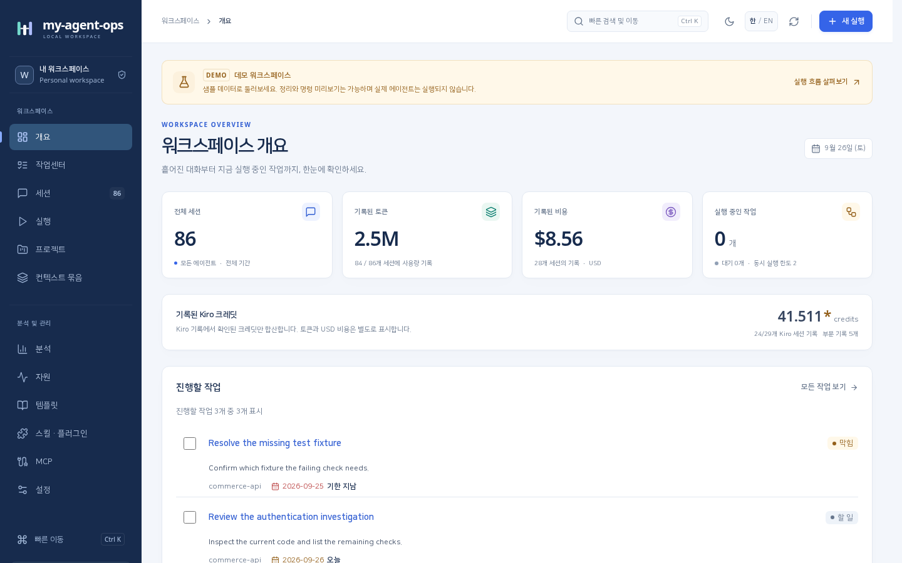
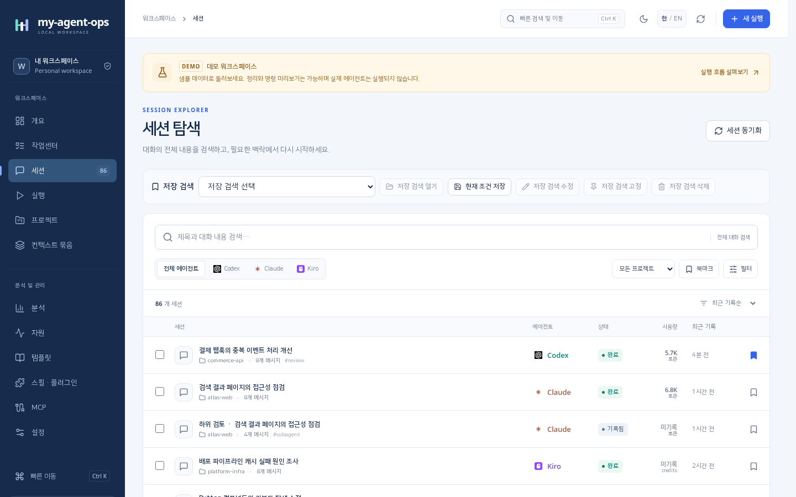
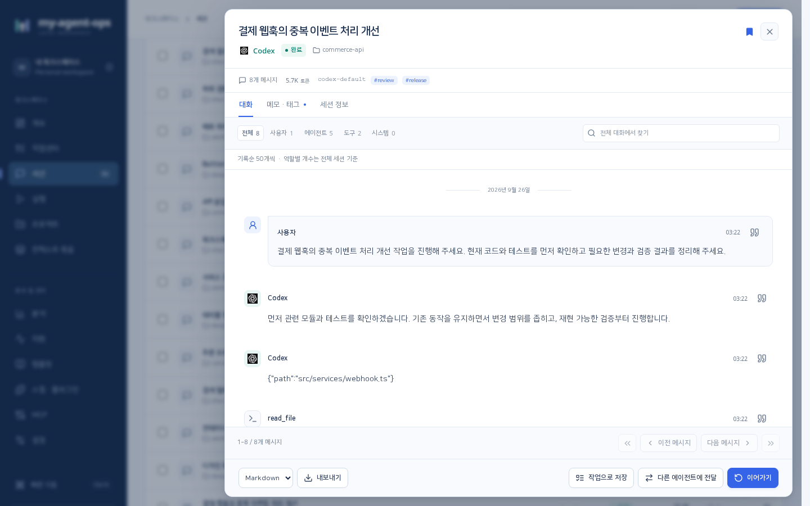
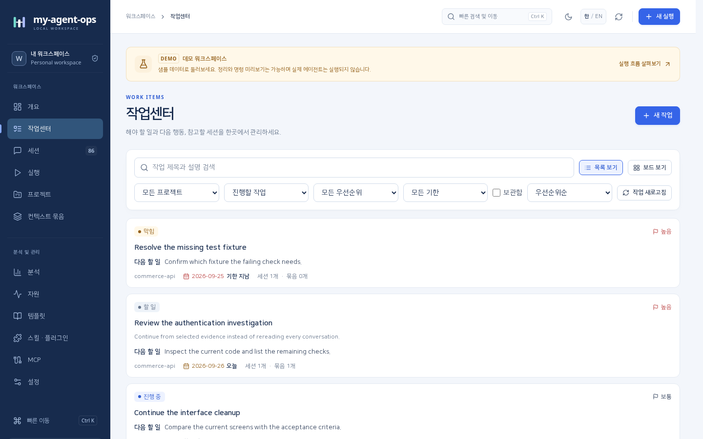
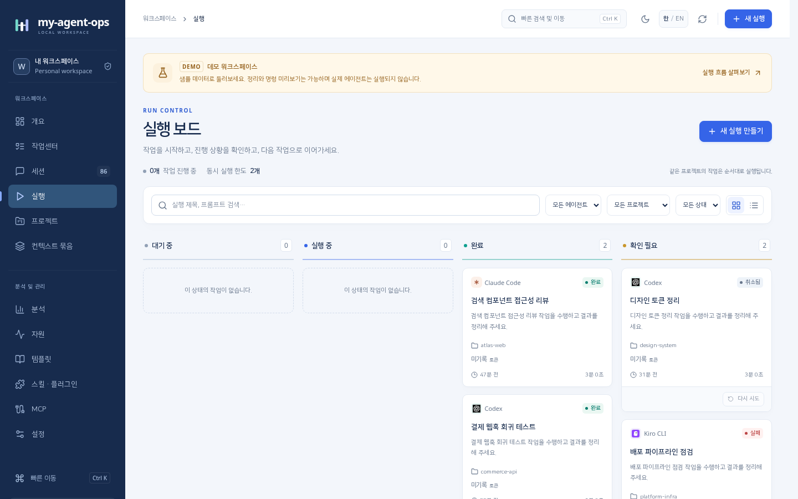
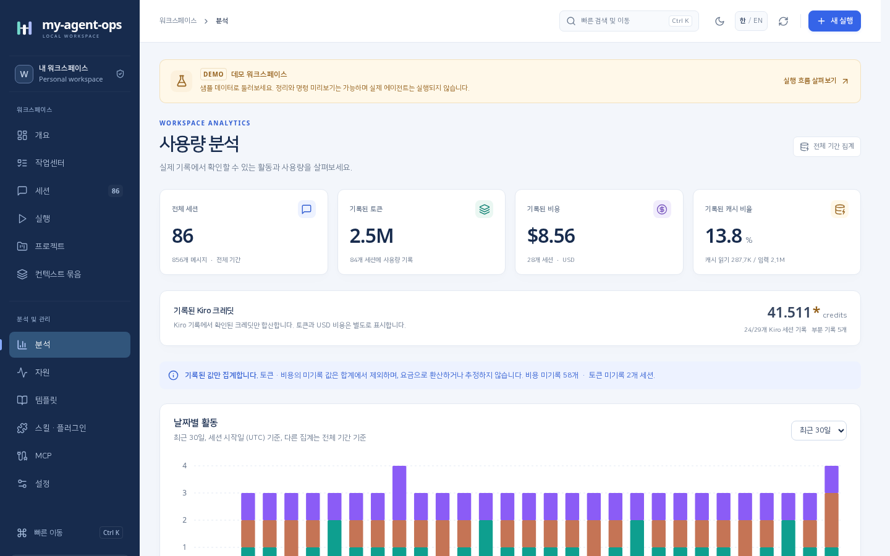
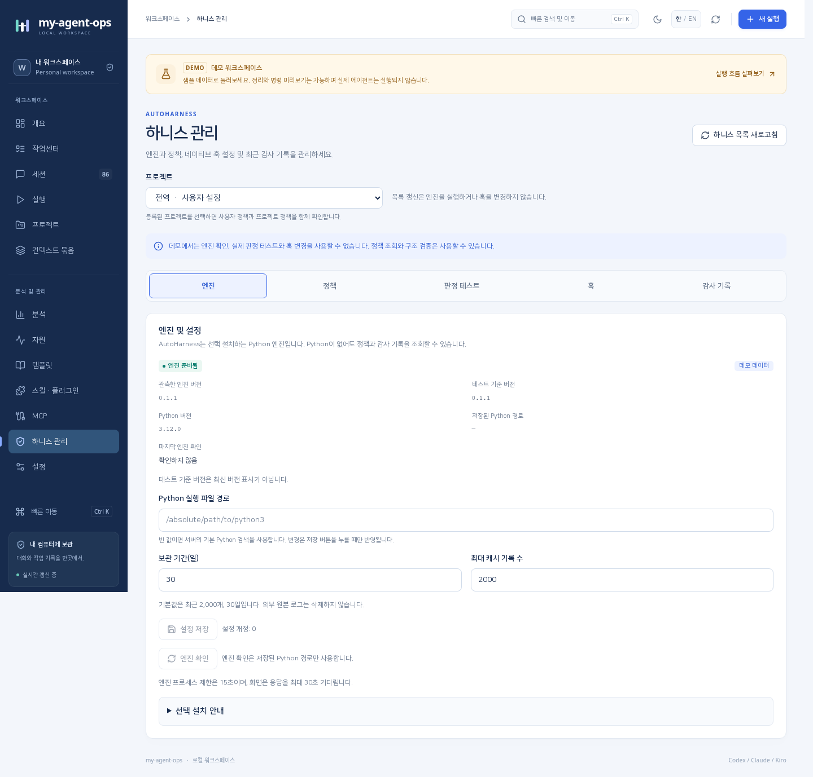
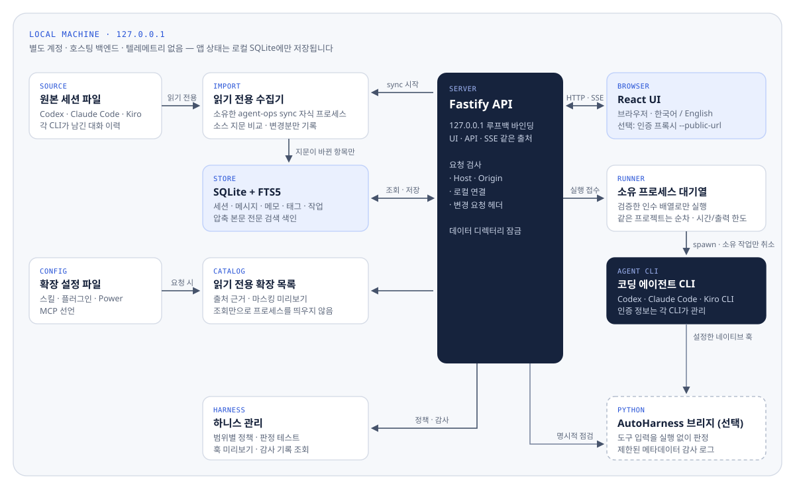

01
한곳에서 찾습니다
세 CLI의 원본 이력을 읽기 전용으로 가져와 대화 전체를 검색합니다. 메모와 태그, 저장 검색으로 다시 찾기 쉽게 정리합니다.
지난 대화를 찾고, 다음 할 일을 정리하고, 필요한 맥락을 담아 다시 실행합니다. 가져온 대화와 작업 상태는 내 컴퓨터의 SQLite에만 남습니다.

Codex, Claude Code, Kiro CLI는 각자 다른 위치와 형식으로 대화를 남깁니다. 어제 조사한 내용을 다시 찾고, 그 맥락을 다른 에이전트에 넘기고, 무엇을 실행했는지 확인하려면 도구 사이를 오가야 합니다.
세 CLI의 원본 이력을 읽기 전용으로 가져와 대화 전체를 검색합니다. 메모와 태그, 저장 검색으로 다시 찾기 쉽게 정리합니다.
작업센터에 다음 할 일을 남기고, 템플릿과 컨텍스트 묶음으로 프롬프트를 준비합니다. 명령을 미리 본 뒤 직접 실행을 시작합니다.
서버는 127.0.0.1에만 열리고 원본 이력은 수정하지 않습니다. 앱이 시작한 프로세스만 취소하며, 기록되지 않은 사용량은 추정하지 않고 미기록으로 남깁니다.
대화 검색에서 시작해 작업 정리, 실행, 맥락 인계, 설정 점검까지 같은 로컬 데이터 위에서 이어집니다.
원본 이력을 가져와 전체 대화를 검색하고 세션 필터, 메모, 태그, 세션 비교와 내보내기를 사용합니다.
목록과 보드에서 다음 할 일, 우선순위, 기한, 세션·컨텍스트 연결과 마지막 실행 결과를 정리합니다. 완료 여부는 직접 정합니다.
CLI 명령을 미리 보고 작업을 대기열에 넣습니다. 실시간 로그를 확인하고 앱이 시작한 작업만 취소하거나 다시 실행합니다.
메시지 인용과 메모를 출처와 함께 모아 로컬에서 프롬프트로 조합하고, Markdown이나 JSON으로 내보냅니다.
텍스트, 여러 줄, 선택 입력으로 프롬프트를 채우고 적용 후 편집합니다. 이전 개정은 미리 보거나 복원할 수 있습니다.
상대 기간을 포함한 세션 조건을 저장하고, Ctrl/Cmd + K 팔레트에서 고정 검색, 작업, 프로젝트와 템플릿을 엽니다.
토큰, 비용, 모델·프로젝트·도구별 분포와 Kiro credit을 보여 줍니다. 기록된 0, 미기록, 부분 기록을 구분합니다.
스킬, 플러그인, Power, MCP 선언을 출처 근거와 마스킹된 미리보기로 살펴봅니다. 분석이나 연결 점검은 직접 선택합니다.
범위별 정책을 확인하고 편집합니다. 선택형 Python 엔진으로 판정을 테스트하고, 훅 변경을 미리 보며 감사 기록을 조회합니다.
세션을 찾고, 대화를 읽고, 할 일로 옮기고, 실행 결과와 사용량을 확인합니다.






모든 화면은 실제 대화 이력이 아닌 agent-ops demo의 격리된 샘플 데이터로 캡처했습니다.
사이드바의 각 화면은 같은 로컬 데이터를 서로 다른 용도로 보여 줍니다.
| 화면 | 용도 | 영역 |
|---|---|---|
| 개요 | 에이전트 이력, 진행할 작업, 최근 실행, 실행 상태와 30일 활동 확인 | 작업 |
| 작업센터 | 목록과 보드에서 업무 정리, 세션과 컨텍스트 묶음 연결, 실행 준비 | 작업 |
| 세션 · 대화 상세 | 대화 본문 검색, 저장 검색, Markdown과 도구 출력 확인, 메모·태그 편집과 세션 비교 | 작업 |
| 실행 · 작업 인계 | 명령 미리보기, 대기열과 실시간 로그, 취소와 재실행, 다른 에이전트용 프롬프트 준비 | 작업 |
| 프로젝트 | 작업 경로 등록, 프로젝트별 실행 허용과 관련 이력 탐색 | 작업 |
| 컨텍스트 묶음 | 메시지 인용, 메모 추가, 순서 정리, 프롬프트 조합, 내보내기와 실행 준비 | 작업 |
| 분석 | 기록된 Kiro credit, 토큰, 비용, 모델·프로젝트·도구별 분포, 캐시 사용량과 실행 결과 | 분석·관리 |
| 자원 | 서버와 소유 작업의 CPU, RSS, 최근 추이, 데이터 파일과 파일시스템 여유 공간 | 분석·관리 |
| 템플릿 | 분류별 프롬프트 사용과 편집, 변수 입력 정의, 개정 이력 확인과 복원 | 분석·관리 |
| 스킬 · 플러그인 | 정의, 캐시, 활성화 근거, 적용 범위, 원문과 선언된 도구·MCP·훅 확인 | 분석·관리 |
| MCP | 클라이언트별 선언 확인과 미리보기 후 메타데이터 점검 | 분석·관리 |
| 하니스 관리 | 정책 확인, AutoHarness 판정 테스트, 훅 미리보기와 감사 기록 조회 | 분석·관리 |
| 설정 | 앱과 CLI 버전, 이력 경로, 수집 방식과 시간 제한, 동시 실행 수, 테마 설정 | 분석·관리 |
Fastify 서버 하나가 화면, API, 실시간 이벤트를 같은 출처에서 제공합니다. 이력 수집과 에이전트 실행은 서로 분리돼 있어서, 세션을 가져오는 동작이 에이전트를 실행하지 않습니다. 모델 호출은 실행을 시작했을 때 각 CLI가 직접 담당합니다.

모바일에서는 다이어그램을 세로로 돌려 보여 줍니다.
agent-ops sync 자식 프로세스에서 원본 세션 파일을 읽고, 지문이 바뀐 항목만 SQLite + FTS5에 기록합니다.코딩 에이전트의 대화에는 코드, 경로, 판단 근거가 담겨 있습니다. my-agent-ops는 그 기록을 밖으로 보내지도, 바꾸지도 않습니다.
서버는 127.0.0.1에만 바인딩합니다. 프록시 접근은 --public-url을 명시해야 하며 Host, Origin, 로컬 연결, 변경 요청 헤더를 검사합니다.
각 CLI의 원본 이력은 수정하지 않습니다. 세션 식별자, 사용자 메타데이터와 진단 정보를 그대로 보존합니다.
지원하는 CLI만 인수 배열로 실행하고, 이 앱이 시작한 프로세스만 취소합니다. 인증 정보는 각 CLI가 관리합니다.
토큰이나 비용 기록이 없으면 추정하거나 0으로 바꾸지 않고 미기록으로 표시합니다.
데모 상태는 실제 데이터와 분리되고, 데모 모드에서는 에이전트가 실행되지 않습니다.
확장 상태는 설정에서 확인한 근거일 뿐 실제 호출을 뜻하지 않습니다. 미리보기에서는 민감한 값을 가립니다.
임시 저장소와 제어된 CLI 픽스처로 검증하며, 유료 모델 추론은 호출하지 않습니다.
Node.js 20.19 이상이 있으면 설치할 수 있습니다. 이력 수집과 데모 탐색에는 모델 실행이 필요하지 않습니다.
# GitHub 릴리스의 설치 파일(.tgz) 주소로 설치합니다. $ npm install -g <release-url>/agent-ops-local-<version>.tgz # 격리된 샘플 데이터로 둘러봅니다. 에이전트는 실행되지 않습니다. $ agent-ops demo # 내 Codex · Claude Code · Kiro 이력으로 시작합니다. $ agent-ops